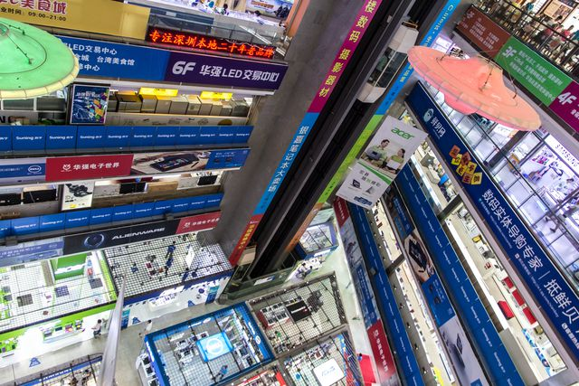
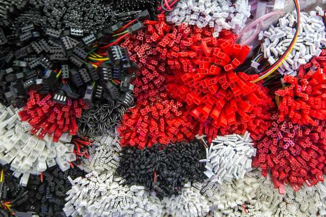
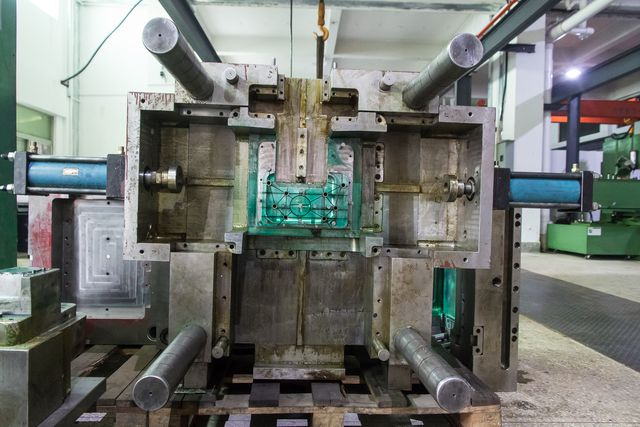

So you’ve arrived in Shenzhen, picked up a few phrases of Mandarin, found a place to stay and got the basics covered. Still, you don’t know much about the place and you are not sure what to expect. In this post, we will try and prepare you for some of the details that we ourselves overlooked and have learnt in our short time here.

One of many electronics markets in Shenzhen.
Chinese censorship is real and heavy-handed but thankfully relatively easy to get around using a VPN. You can set up your own before leaving or pay for service. We’ve tried vyprVPN and Astrill. It’s hard to tell which is better because there is a lot of connectivity issues in general and the VPN is not always the culprit. Your mileage may vary, but we’ve had best luck with Astrill. The interface leaves something to be desired, but after installation it fades into the background. You can go on Skype without any VPN so you are not completely cut off from the world but Google, Twitter, Facebook and several other sites that you may be using occasionally will not be available. It’s also hard to read up on select history.
Waygo has saved us a number of times. It’s an app optimized for translating menus which means it does those very well, much better than the similar functionality on Google translate. If you are not an adventurous eater, China can be a bit scary, but don’t fall into the trap of only eating western food. You will miss out on some great experiences and you will be paying much more than necessary. After all, you are a startup and you need to keep an eye on your burn rate. If you use Waygo, you can know what you are ordering (even pointing at pictures can leave you uncertain of what you actually just ordered) which gives you some peace of mind.
Maybe not this one.
Something that surprised us when we arrived was how clean the Shenzhen air is. Blue sky and no more noticeable smells than in any large tropical city. At least on the first day. It turns out that it varies quite a bit. It’s currently typhoon season and it seems that the rain has a positive effect, especially after a really heavy shower. You can keep an eye on the current air quality or use an app for your phone which will also offer push notifications if the air becomes unhealthy. If so, you can choose to wear a face mask. We’ve heard rumours of ineffective masks being sold so we’ve bought ones from Watson’s, a chain of pharmacies that can be found everywhere. So far though, we’ve had no reason to use them.
Setting up a bank account in Shenzhen is relatively easy. In theory. You don’t need anything but patience, renmibi and a passport (nationality of your choosing). In practice it’s not trivial, and we would not have been able to do this without a native speaker helping us. It took the better part of an hour, and we signed and stamped more papers than what seemed strictly necessary. In the end we had a fresh bank account from China Merchant Bank, free from fees as long as we keep a balance of a thousand yuan (the equivalent of $150). On the surface banks in China look like they would in any western country but we also got free laundry detergent for being customers and that has yet to happen to us in Scandinavia. Most importantly though, we got a shiny new debit card which means we’re less reliant on cash and can shop on Taobao and other online stores.
With your new bank account and a Chinese phone number, you can create an account on Taobao. It’s best described as the Amazon or Ebay of China, but words don’t do it justice and it has to be experienced. You can buy anything you could imagine. It’s cheap and fast but not easy to use unless you speak Mandarin. We rely on google translate and Baidu translate to navigate. The word ‘baby’ will come up a lot, but don’t be deterred. This is just one of many Chinese signs with ambigous meanings that the translate services struggle with. It’s important to realize that Taobao is a collection of many different vendors, so you need to check the ratings of each vendor that you buy from. They will ship individually to you, and their quality varies greatly. Most only ship in Mainland China but if you want to try out Taobao from home there are agents that will help you, like Taobao Spree or Taobao Ring.
Shopping on Taobao is fun (one-wheeled Segways!) but it’s not why you are here. You are here to make reality of your product idea and you’re eager to get started with manufacturing. Depending on where you are in your project, you may feel close or far away from production, but if you don’t have any previous experience you probably should not trust your intuition. Even though you were able to 3D-print a model back home that looks and works like your product, you might still be quite a long way from something that is manufacturable.
The biggest difference between the west and China that will speed up your prototyping efforts is the instant availability of many components. In the US if you wanted to try the feel and sound of different tactile switches, you might go and order the components from Digikey and get them in a few days. That’s fast, but nothing beats being able to go into one of the electronics malls in Shenzhen and handle the components yourself. We found ourselves in need of switches just the other day, and within an hour we had been able to try more different varieties than we’d been able to order. Finding exactly the right one is still a challenge, and for production you might still want to go online and order specific components with higher quality and better feel, but for prototyping it’s hard to beat going out the door and rummage through the chaos that is the markets.

Shopping for wires and connecters at a market in Huaquangbei.
Another difference that will speed up your prototyping is the fast availability and affordability of PCBs. For trying different components one can get very far with bread- and break-out-boards but you quite soon you will need to leave the breadboards behind and produce some PCBs. If you have never made PCBs before there are many good resources online to learn and open source EDA software like KiCad is getting competitive with commercial alternatives.
There are great resources for ordering PCBs worldwide and through services like DirtyPCBs you can get direct access to the Shenzhen ecosystem too. Being in Shenzhen you cut out the shipping time and costs which means can get your boards delivered faster and can order smaller quantities more often without feeling like the shipping costs are eating up your budget.
The landscape for 3D-printing is analogous. While Shapeways and others are offering great service in the US and Europe they can be slow due to high order volumes. Prices in China are not that much more affordable compared to the west, but they’re faster. Within Shenzhen there are several shops with high quality machines and fast enough delivery that you can make 3D-printing part of the iterative creative process. The option of having your own machine is of course also always open, but considering the ease of ordering from specialised manufacturers you may find that it’s not worth the hassle (it’s a lot of fun though, but that’s another story).
Depending on your design, an option to could be to use milling machines. Since this is more labour intensive it’s often priced out of reach in the west. In China however it’s competitive with 3D-printing, often resulting in higher quality samples at similar prices.
Additive manufacturing (3D-printing) is incredible in that you can use support material that will be removed after the print is finished. That enables you to make shapes with undercuts and even pieces completely contained inside other structures. When dealing with injection molding for mass-manufacturing you have a completely different set of constraints. The only support material you have is the tool, made from aluminium or steel, and you have to think about being able to remove the plastic after it has hardened. This makes shapes like undercuts challenging or sometimes even impossible to make.

Tooling in a factory outside Shenzhen.
It’s a good exercise to find some plastic electronics product and take it apart to see how the mold had to designed. When you look at the pieces you will often find that they are made of interlocking parts, each easy to manufacture, and coming together to form a complete product. You will notice ridges for structural purposes, how screw holes are made and other features whose purpose might escape you. There are a lot of things to think about, and people spend years learning how to do plastic well. Because of this, and because the cost of mistakes with molding tools are so high, it is one of those areas where if you haven’t done it before we recommend you seek professional advice.
We will revisit the subject of manufacturing in later posts when we ourselves get closer, but for now we will go back to iterating on our prototypes.